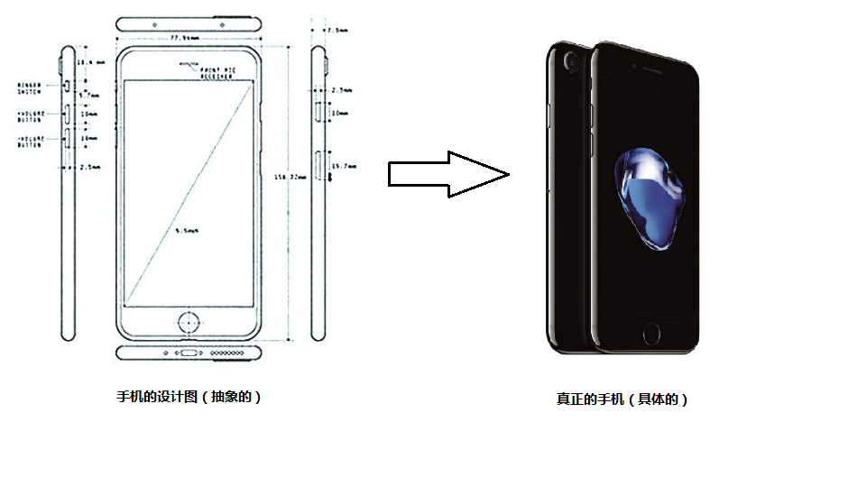
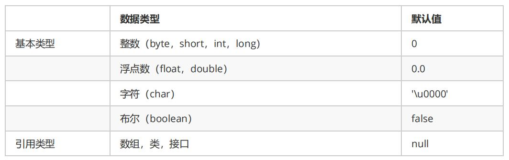
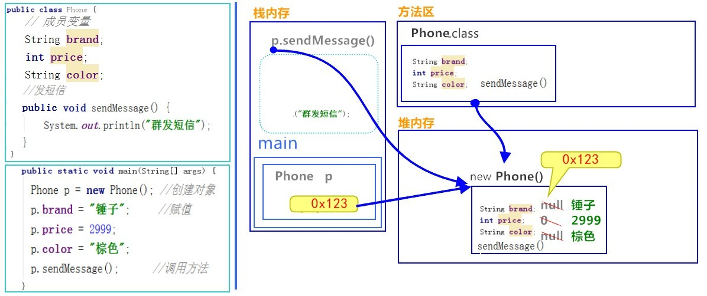
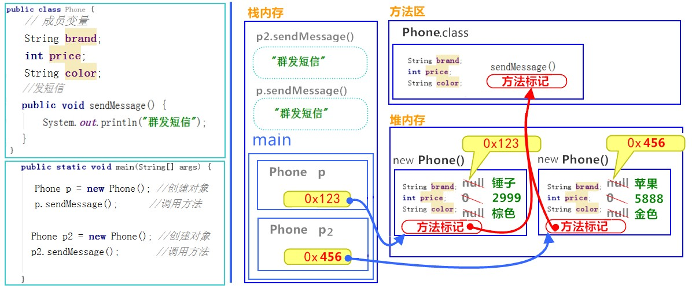
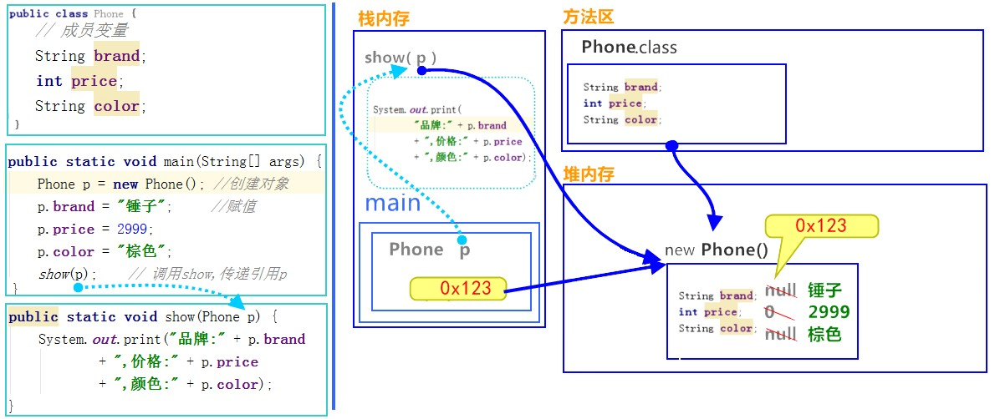
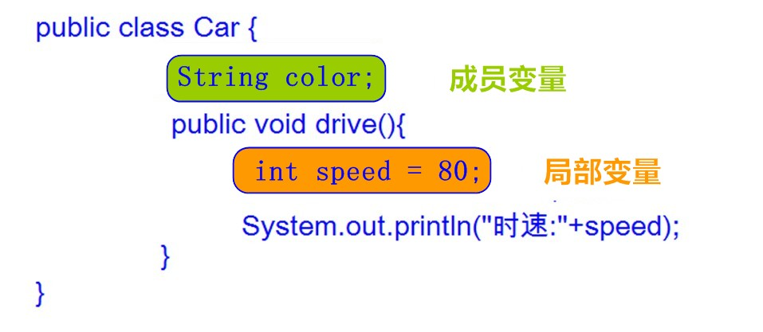

今日内容
1.面向对象
2.类与对象
3.三大特征——封装
4.构造方法
教学目标
1.能够理解面向对象的思想
2.能够明确类与对象关系
3.能够掌握类的定义格式
4.能够掌握创建对象格式，并访问类中的成员
5.能够完成手机类的练习
6.能够理解对象的内存图
7.能够说出成员变量和局部变量的区别
8.能够理解private关键字的含义
9.能够说出this关键字可以解决的问题
10.能够理解构造方法的含义
11.能够用封装的思想定义一个标准类
1.1 面向对象思想概述
概述
Java语言是一种面向对象的程序设计语言，而面向对象思想是一种程序设计思想，我们在面向对象思想的指引下，
使用Java语言去设计、开发计算机程序。 这里的对象泛指现实中一切事物，每种事物都具备自己的属性和行为。面
向对象思想就是在计算机程序设计过程中，参照现实中事物，将事物的属性特征、行为特征抽象出来，描述成计算
机事件的设计思想。 它区别于面向过程思想，强调的是通过调用对象的行为来实现功能，而不是自己一步一步的去
操作实现。
举例
洗衣服:
面向过程：把衣服脱下来-->找一个盆-->放点洗衣粉-->加点水-->浸泡10分钟-->揉一揉-->清洗衣服-->拧干-->晾
起来
面向对象：把衣服脱下来-->打开全自动洗衣机-->扔衣服-->按钮-->晾起来
区别:
面向过程：强调步骤。
面向对象：强调对象，这里的对象就是洗衣机。
特点
面向对象思想是一种更符合我们思考习惯的思想，它可以将复杂的事情简单化，并将我们从执行者变成了指挥者。
面向对象的语言中，包含了三大基本特征，即封装、继承和多态。
1.2 类和对象
环顾周围，你会发现很多对象，比如桌子，椅子，同学，老师等。桌椅属于办公用品，师生都是人类。那么什么是
类呢？什么是对象呢？
什么是类
类：是一组相关属性和行为的集合。可以看成是一类事物的模板，使用事物的属性特征和行为特征来描述该
类事物。
现实中，描述一类事物：
属性：就是该事物的状态信息。
行为：就是该事物能够做什么。
举例：小猫。
属性：名字、体重、年龄、颜色。 行为：走、跑、叫。
什么是对象
对象：是一类事物的具体体现。对象是类的一个实例（对象并不是找个女朋友），必然具备该类事物的属性
和行为。
现实中，一类事物的一个实例：一只小猫。
举例：一只小猫。
属性：tom、5kg、2 years、yellow。 行为：溜墙根走、蹦跶的跑、喵喵叫。
类与对象的关系
类是对一类事物的描述，是抽象的。
对象是一类事物的实例，是具体的。
类是对象的模板，对象是类的实体。

1.3 类的定义
事物与类的对比
现实世界的一类事物：
属性：事物的状态信息。 行为：事物能够做什么。
Java中用class描述事物也是如此：
成员变量：对应事物的属性 成员方法：对应事物的行为
类的定义格式
public class ClassName {
//成员变量
//成员方法
}定义类：就是定义类的成员，包括成员变量和成员方法。
成员变量：和以前定义变量几乎是一样的。只不过位置发生了改变。在类中，方法外。
成员方法：和以前定义方法几乎是一样的。只不过把static去掉，static的作用在面向对象后面课程中再详细
讲解。
类的定义格式举例：
public class Student {
//成员变量
String name；//姓名
int age；//年龄
//成员方法
//学习的方法
publicvoid study() {
System.out.println("好好学习，天天向上");
}
//吃饭的方法
publicvoid eat() {
System.out.println("学习饿了要吃饭");
}
}
1.4 对象的使用
对象的使用格式
创建对象：
类名 对象名 = new 类名();使用对象访问类中的成员:
对象名.成员变量；
对象名.成员方法()；对象的使用格式举例:
public class Test01_Student {
public static void main(String[] args) {
//创建对象格式：类名 对象名 = new 类名();
Student s = new Student();
System.out.println("s:"+s); //cn.itcast.Student@100363
//直接输出成员变量值
System.out.println("姓名："+s.name); //null
System.out.println("年龄："+s.age); //0
System.out.println("‐‐‐‐‐‐‐‐‐‐");
//给成员变量赋值
s.name = "赵丽颖";
s.age = 18;
//再次输出成员变量的值
System.out.println("姓名："+s.name); //赵丽颖
System.out.println("年龄："+s.age); //18
System.out.println("‐‐‐‐‐‐‐‐‐‐");
//调用成员方法
s.study(); // "好好学习，天天向上"
s.eat(); // "学习饿了要吃饭"
}
成员变量的默认值

1.5 类与对象的练习
定义手机类：
public class Phone {
// 成员变量
String brand; //品牌
int price; //价格
String color; //颜色
// 成员方法
//打电话
public void call(String name) {
System.out.println("给" + name + "打电话");
}
//发短信
public void sendMessage() {
System.out.println("群发短信");
}
}定义测试类：
public class Test02Phone {
public static void main(String[] args) {
//创建对象
Phone p = new Phone();
//输出成员变量值
System.out.println("品牌：" + p.brand); //null
System.out.println("价格：" + p.price); //0
System.out.println("颜色：" + p.color); //null
System.out.println("‐‐‐‐‐‐‐‐‐‐‐‐");
//给成员变量赋值
p.brand = "锤子";
p.price = 2999;
p.color = "棕色";
//再次输出成员变量值
System.out.println("品牌：" + p.brand); //锤子
System.out.println("价格：" + p.price); //2999
System.out.println("颜色：" + p.color); //棕色
System.out.println("‐‐‐‐‐‐‐‐‐‐‐‐");
//调用成员方法
p.call("紫霞");
p.sendMessage();
}
}
1.6 对象内存图
一个对象，调用一个方法内存图

通过上图，我们可以理解，在栈内存中运行的方法，遵循"先进后出，后进先出"的原则。变量p指向堆内存中
的空间，寻找方法信息，去执行该方法。
但是，这里依然有问题存在。创建多个对象时，如果每个对象内部都保存一份方法信息，这就非常浪费内存
了，因为所有对象的方法信息都是一样的。那么如何解决这个问题呢？请看如下图解。
两个对象，调用同一方法内存图

对象调用方法时，根据对象中方法标记（地址值），去类中寻找方法信息。这样哪怕是多个对象，方法信息
只保存一份，节约内存空间。
一个引用，作为参数传递到方法中内存图

引用类型作为参数，传递的是地址值。
1.7 成员变量和局部变量区别
变量根据定义位置的不同，我们给变量起了不同的名字。如下图所示：

在类中的位置不同 重点
成员变量：类中，方法外
局部变量：方法中或者方法声明上(形式参数)
作用范围不一样 重点
成员变量：类中
局部变量：方法中
初始化值的不同 重点
成员变量：有默认值
局部变量：没有默认值。必须先定义，赋值，最后使用
在内存中的位置不同 了解
成员变量：堆内存
局部变量：栈内存
生命周期不同 了解
成员变量：随着对象的创建而存在，随着对象的消失而消失
局部变量：随着方法的调用而存在，随着方法的调用完毕而消失
第2章 封装
2.1 封装概述
概述
面向对象编程语言是对客观世界的模拟，客观世界里成员变量都是隐藏在对象内部的，外界无法直接操作和修改。
封装可以被认为是一个保护屏障，防止该类的代码和数据被其他类随意访问。要访问该类的数据，必须通过指定的
方式。适当的封装可以让代码更容易理解与维护，也加强了代码的安全性。
原则
将属性隐藏起来，若需要访问某个属性，提供公共方法对其访问。
2.2 封装的步骤
1. 使用 private 关键字来修饰成员变量。
2. 对需要访问的成员变量，提供对应的一对 getXxx 方法 、 setXxx 方法。
2.3 封装的操作——private关键字
private的含义
1. private是一个权限修饰符，代表最小权限。
2. 可以修饰成员变量和成员方法。
3. 被private修饰后的成员变量和成员方法，只在本类中才能访问。
private的使用格式
private 数据类型 变量名 ；1. 使用 private 修饰成员变量，代码如下：
public class Student {
private String name;
private int age;
}
2. 提供 getXxx 方法 / setXxx 方法，可以访问成员变量，代码如下：
public class Student {
private String name;
private int age;
public void setName(String n) {
name = n;
}
public String getName() {
return name;
}
public void setAge(int a) {
age = a;
}
public int getAge() {
return age;
}
}
2.4 封装优化1——this关键字
我们发现 setXxx 方法中的形参名字并不符合见名知意的规定，那么如果修改与成员变量名一致，是否就见名知意
了呢？代码如下：
public class Student {
private String name;
private int age;
public void setName(String name) {
name = name;
}
public void setAge(int age) {
age = age;
}
}
经过修改和测试，我们发现新的问题，成员变量赋值失败了。也就是说，在修改了 setXxx() 的形参变量名后，方
法并没有给成员变量赋值！这是由于形参变量名与成员变量名重名，导致成员变量名被隐藏，方法中的变量名，无
法访问到成员变量，从而赋值失败。所以，我们只能使用this关键字，来解决这个重名问题。
this的含义
this代表所在类的当前对象的引用（地址值），即对象自己的引用。
记住 ：方法被哪个对象调用，方法中的this就代表那个对象。即谁在调用，this就代表谁。
this使用格式
this.成员变量名；使用 this 修饰方法中的变量，解决成员变量被隐藏的问题，代码如下：
public class Student {
private String name;
private int age;
public void setName(String name) {
//name = name;
this.name = name;
}
public String getName() {
return name;
}
public void setAge(int age) {
//age = age;
this.age = age;
}
public int getAge() {
return age;
}
}
小贴士：方法中只有一个变量名时，默认也是使用 this 修饰，可以省略不写。
2.5 封装优化2——构造方法
当一个对象被创建时候，构造方法用来初始化该对象，给对象的成员变量赋初始值。
小贴士：无论你与否自定义构造方法，所有的类都有构造方法，因为Java自动提供了一个无参数构造方法，
一旦自己定义了构造方法，Java自动提供的默认无参数构造方法就会失效。
构造方法的定义格式
修饰符 构造方法名(参数列表) {
// 方法体
}构造方法的写法上，方法名与它所在的类名相同。它没有返回值，所以不需要返回值类型，甚至不需要void。使用
构造方法后，代码如下：
public class Student {
private String name;
private int age;
// 无参数构造方法
public Student() {}
// 有参数构造方法
public Student(String name, int age) {
this.name = name;
this.age = age;
}
}
注意事项
1. 如果你不提供构造方法，系统会给出无参数构造方法。
2. 如果你提供了构造方法，系统将不再提供无参数构造方法。
3. 构造方法是可以重载的，既可以定义参数，也可以不定义参数。
2.6 标准代码——JavaBean
JavaBean 是 Java语言编写类的一种标准规范。符合 JavaBean 的类，要求类必须是具体的和公共的，并且具有无
参数的构造方法，提供用来操作成员变量的 set 和 get 方法。
public class ClassName {
//成员变量
//构造方法
//无参构造方法【必须】
//有参构造方法【建议】
//成员方法
//getXxx()
//setXxx()
}编写符合 JavaBean 规范的类，以学生类为例，标准代码如下：
public class Student {
//成员变量
private String name;
private int age;
//构造方法
public Student() {}
public Student(String name, int age) {
this.name = name;
this.age = age;
}
//成员方法
publicvoid setName(String name) {
this.name = name;
}
public String getName() {
return name;
}
publicvoid setAge(int age) {
this.age = age;
}
publicint getAge() {
return age;
}
}测试类，代码如下：
public class TestStudent {
public static void main(String[] args) {
//无参构造使用
Student s = new Student();
s.setName("柳岩");
s.setAge(18);
System.out.println(s.getName() + "‐‐‐" + s.getAge());
//带参构造使用
Student s2 = new Student("赵丽颖", 18);
System.out.println(s2.getName() + "‐‐‐" + s2.getAge());
}
}
ending...